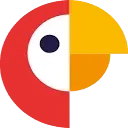

UberduckАудио (голос и музыка)
«Uberduck» получает речевую запись из текста.
Раздел «Текст → речь»: варианты ИИ для этой задачи, описания возможностей и переходы к обзорам. Сравните несколько решений на одинаковом примере.
В Молекуле подготовьте короткий текст для записи диктором и отметьте смысловые паузы. Прочитайте реплику вслух; произношение названий и конечное аудио проверяются при отдельной записи.
Подготовь для озвучки объявление о выставке: расставь смысловые паузы, распиши сложные сокращения и отметь ударения в именах. Сохрани время, место и условия посещения.

«Uberduck» получает речевую запись из текста.
«Voiceful.io» получает речевую запись из текста. Дополнительно «Voiceful.io» преобразует звучание голоса.
«Zvonobot» представлен в разделе «Аудио (голос и музыка)». При выборе проверьте нужную операцию и условия работы с результатом.
«AI Reads» представлен в разделе «Аудио (голос и музыка)». При выборе проверьте нужную операцию и условия работы с результатом.

ChatGPT помогает писать и редактировать тексты, разбирать документы и таблицы, обсуждать код. Поиск, анализ данных и работа с изображениями дополняют чат, когда доступны в выбранном аккаунте.
ChatOn объединяет разговорного ИИ-помощника и инструменты письменной работы в приложении. Среди операций есть создание изображения по тексту и проверка грамматики, а также синтез речи. Пользователь выбирает эти средства для общения и подготовки материалов, сочетая языковые задачи с визуальной и голосовой формой.
Dubverse подготавливает субтитры и голосовую дорожку для видео с участием ИИ. Пользователь может выбирать язык и вариант говорящего. Совместная работа и доступ к языковым специалистам дополняют создание озвучки, позволяя рассматривать речевую часть вместе с подготовкой видеоматериала к использованию.
iMyFone MagicMic меняет голос в реальном времени и предлагает звуковые эффекты. В описании названа работа с Discord, Zoom и играми. Программа предназначена для оформления звучащей речи в ходе общения, сочетая выбранное преобразование голоса с дополнительными звуками в подключённом пользовательском окружении.

LOVO предназначен для подготовки озвучки с использованием ИИ-голосов. Платформа поддерживает разные языки и объединяет средства редактирования с организацией голосовых материалов. В её описании также упомянута работа с актёрами озвучивания, поэтому продукт охватывает не только получение синтезированной речи, но и дальнейшую подготовку звукового проекта.

В инструменте «Narakeet» можно подготавливать озвучку текстового материала. Ещё одно направление работы: работать с синтезированной голосовой партией.
Replicastudios преобразует текст в речь и предлагает библиотеку голосов. В описании также представлено обучение ИИ-модели для имитации актёров озвучивания. Интеграция с Unreal и iClone дополняет подготовку голосового материала, связывая речевые инструменты и выбранную пользователем среду работы над игровым проектом.
Slidecast создаёт презентацию по заданной теме, подбирая текст и оформление слайдов. К материалу можно добавить озвучивание выбранным голосом. После подготовки пользователь делится презентацией через ссылку либо QR-код и наблюдает за просмотрами, чтобы понимать использование материала аудиторией.
«soundoftext.app» получает речевую запись из текста.
«VeraVoice» получает речевую запись из текста.
«VoiceOverMaker» готовит текстовый черновик по условиям задачи.
«ElevenLabs Reader» получает речевую запись из текста.
Для «Fluxon» сначала определите свою задачу и требуемый результат. Карточка относится к направлению «Аудио (голос и музыка)».
Сравнивать «Glagol» с другими инструментами раздела «Русские» удобнее на одинаковом исходном материале.
«SpeechGen» получает речевую запись из текста. «SpeechGen» также работает с материалами для социальных площадок.
«SpeechKit» получает речевую запись из текста.
Сравнивать «Voice Engine by OpenAI» с другими инструментами раздела «Аудио (голос и музыка)» удобнее на одинаковом исходном материале.
«Writer AI» готовит текстовый черновик по условиям задачи.
AnyToSpeech переводит текстовое содержимое в речь и предусматривает извлечение текста из изображений. В работе могут использоваться документы, сайты и визуальные материалы, отдельно описано чтение PDF вслух. Инструмент ориентирован на звуковое потребление информации, включая прослушивание материалов, связанных с видео на YouTube.
Для «Banterai» сначала определите свою задачу и требуемый результат. Карточка относится к направлению «Чат-боты и ассистенты».
Для «Botjet» сначала определите свою задачу и требуемый результат. Карточка относится к направлению «Чат-боты и ассистенты».
Сравнивать «Dolores» с другими инструментами раздела «Чат-боты и ассистенты» удобнее на одинаковом исходном материале.
«Lalamu» получает речевую запись из текста. «Lalamu» согласует движения губ с речевым материалом.
«Melobytes.com» получает речевую запись из текста. «Melobytes.com» также подготавливает музыкальные варианты по заданию.
«Speakshift AI» представлен в разделе «Видео». При выборе проверьте нужную операцию и условия работы с результатом.
«Voicefy» получает речевую запись из текста.
«Word Express» преобразует речевую запись в письменный материал. «Word Express» также получает речевую запись из текста.
«Free Text-To-Speech» получает речевую запись из текста.
«Just Think AI» получает речевую запись из текста.
«Leelo» получает речевую запись из текста.

Murf AI подготавливает голосовую озвучку и предлагает выбор языков и голосов. В продукте описаны клонирование и смена голоса, а также поддержка видео и изображений. Эти возможности объединяют речевую часть и визуальные материалы при подготовке пользовательского проекта озвучивания.
Сравнивать «Robovoice» с другими инструментами раздела «Русские» удобнее на одинаковом исходном материале.
SpeechEasy озвучивает текст с помощью синтетических голосов и ИИ. Продукт предназначен для преобразования письменного материала в аудиозапись и поддерживает разные сценарии использования речи. Пользователь обращается к этим средствам при подготовке звуковой версии своего текста и выборе способа его представления слушателю.
«Texttovoice.online» позволяет создавать воспроизведение голоса. «Texttovoice.online» получает речевую запись из текста.
«VoiceBot» получает речевую запись из текста.
«Voicely 2.0» представлен в разделе «Создание контента». При выборе проверьте нужную операцию и условия работы с результатом.
«Voiser» преобразует речевую запись в письменный материал. «Voiser» также получает речевую запись из текста.
Сравнивать «Инлексис Голосовой бот» с другими инструментами раздела «Автоматизация» удобнее на одинаковом исходном материале.
AiVOOV преобразует текст в голосовую запись с участием ИИ и предлагает выбор языков и голосов. Среди направлений применения есть видео и подкасты, а также электронное обучение. Пользователь подготавливает озвучку письменного материала для выбранного проекта, рассматривая доступные варианты его звучания.
«Beepbooply» получает речевую запись из текста.
DupDub предназначен для получения речи из текста на разных языках и с различными акцентами. Сервис объединяет синтез голоса с инструментами редактирования звукового материала. Его основной сценарий связан с подготовкой озвучки: исходный текст становится речевой дорожкой, которую затем можно дорабатывать в голосовой студии.
Narration Box преобразует письменный текст в речь с выбором голосовой подачи. Поддерживаются разные языки и акценты, предусмотрены настраиваемые элементы управления рассказчиком. Средства распространения и монетизации дополняют генерацию, связывая подготовку озвученного материала с его дальнейшим обменом и размещением в выбранном рабочем сценарии.
«Narrator» представлен в разделе «Аудио (голос и музыка)». При выборе проверьте нужную операцию и условия работы с результатом.
Overdub преобразует текст в речь и предоставляет средства работы с голосовой записью. В наборе предусмотрены копирование голоса, изменение тона и характеристик звучания, расшифровка и редактирование. Публикация и обмен дополняют подготовку, связывая генерацию голосового материала с его дальнейшей доработкой и передачей в рабочем процессе.
Страница 2 из 3